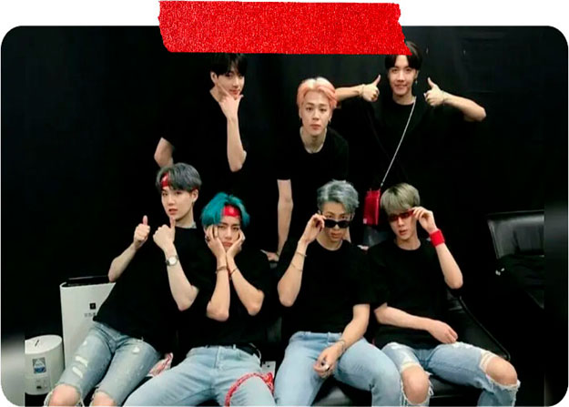

los números detrás de bts
Más allá del escenario
La dimensión económica de BTS no se limita a la música grabada ni a la venta de entradas. Detrás del grupo está HYBE, una compañía de entretenimiento cotizada en Corea del Sur que articula negocios de música, presentaciones, contenido, merchandising y licencias, además de plataformas como Weverse, que reúne comunidad, contenido y comercio en un mismo ecosistema.
Impacto global
Según estudios del Hyundai Research Institute, en su pico de actividad continua el impacto económico anual del grupo rondó entre US 3.600 y US 4.000 millones, equivalente a cerca del 0,3% – 0,5% del PBI de Corea del Sur.
La gira Love Yourself (2019) recaudó US$246 millones, mientras que para el BTS World Tour 2026 las proyecciones de ingresos superan los US$1.000 millones.
En los años de mayor proyección pre pandemia, 1 de cada 13 turistas extranjeros que visitaban Corea del Sur declaraba haber viajado motivado directamente por la banda.
Impacto en el Perú
Ticketmaster registró más de 521 mil personas en cola virtual y picos de 250 mil usuarios en simultáneo, agotando zonas principales en menos de dos horas.
Frente a los S/5.000 que costaba viajar al exterior para verlos, en Lima la experiencia completa promedia hasta S/3.000 (con boletos de S/483 a S/2.591 en zona VIP).
En el emporio de Gamarra, las prendas y colecciones alusivas inspiradas en el grupo proyectan sumar un 3% a las ventas de la temporada; en Mesa Redonda, el comercio de souvenirs y artículos conmemorativos estima repuntes de hasta 400%.
Perú se pinta de morado
La espera por BTS se convirtió en una celebración organizada por el propio fandom. A través de iniciativas y organizaciones como ROAD TO 7, BTS Perú Fanclub y otras fanbases se preparan dance covers, proyecciones, streaming parties y fan actions para los conciertos: banners, una ola de ARMY Bombs, elementos inspirados en la cultura peruana y una celebración por el cumpleaños de Jimin.
También hay una ruta por la ciudad con activaciones, cabinas de fotos y publicidad aérea como parapentes dedicados a BTS y sus integrantes. Además, anunciaron un show gratuito de drones en la Costa Verde, conseguido después de superar las 25 mil interacciones en una campaña digital.
A este festejo se suma el Grupo 5 con una streaming party junto a ARMY y Christian Yaipén. Un cruce inesperado entre la cumbia peruana y el fenómeno BTS que muestra hasta dónde ha llegado la expectativa por los conciertos.
Y como para ARMY nunca es suficiente, también pueden visitar la experiencia oficial BTS POP-UP: ARIRANG IN LIMA, que abrió sus puertas en Miraflores.
De la ONU a la Casa Blanca
Desliza para interactuar
UNICEF y Mérito Cultural (2017—2018): Lanzaron la campaña global Love Myself contra la violencia juvenil y se convirtieron en los ciudadanos más jóvenes en recibir la Orden del Mérito Cultural del gobierno surcoreano por expandir el patrimonio del país.

Tribuna en la ONU y rango diplomático (2021): Tras su recordado discurso Speak Yourself de 2018 ante la Asamblea General, en 2021 regresaron investidos como Enviados Presidenciales Especiales de Corea del Sur con pasaporte diplomático, proyectando el video de Permission to Dance filmado en la sede de Naciones Unidas en Nueva York.
Visita a la Casa Blanca (2022): Recibidos por el presidente Joe Biden en el Despacho Oval, alzaron la voz en la sala de prensa presidencial contra la xenofobia y los crímenes de odio dirigidos hacia la comunidad asiática en Occidente.

Causas sociales globales: Donaron un millón de dólares al movimiento Black Lives Matter en 2020 —cifra igualada por ARMY en apenas 25 horas bajo la campaña global #MatchAMillion— y sumaron su voz a causas de sostenibilidad climática junto a Global Citizen.
Su trascendencia rebasó la industria discográfica: el gobierno surcoreano los designó Enviados Presidenciales Especiales dotándolos de pasaportes diplomáticos en la ONU, mientras foros multilaterales y líderes de Estado —desde la Casa Blanca hasta Naciones Unidas— recurrieron a su convocatoria como un canal genuino para dialogar con las juventudes de los cinco continentes.